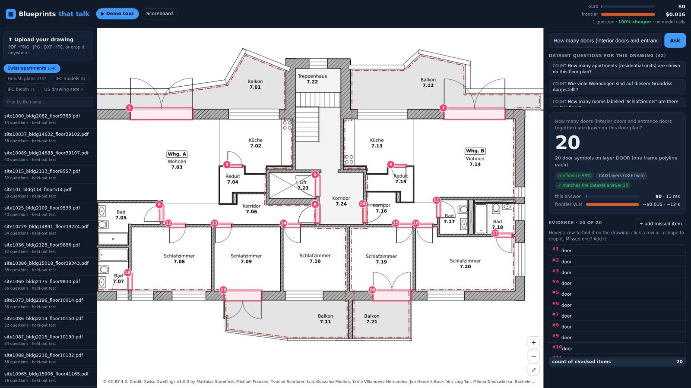
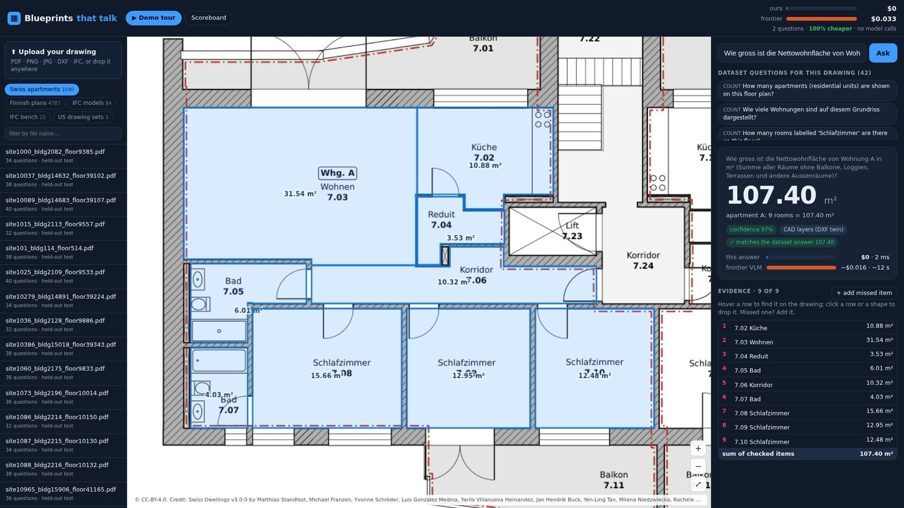
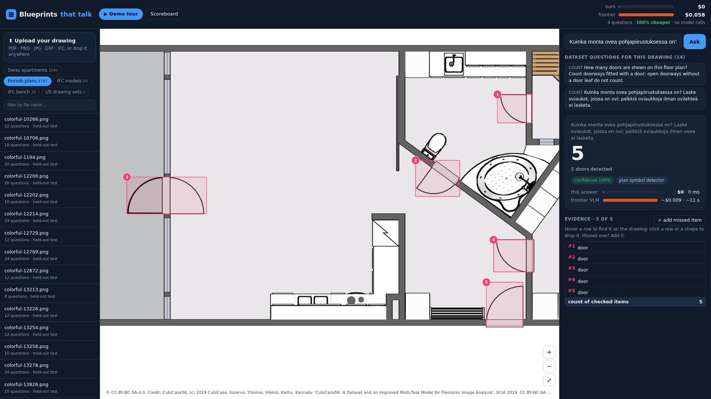
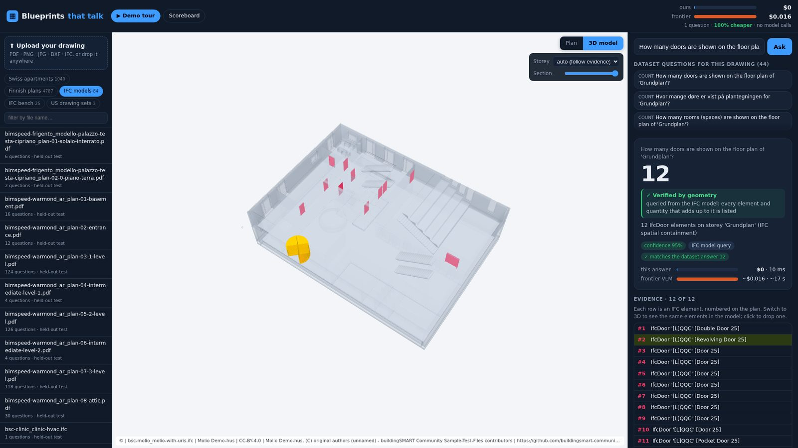

runs/router_full_test.summary.md, held-out test split of the Junction datasetCounting doors, measuring rooms, summing walls: estimates and bills of quantities are built on these numbers. Two real answers from a frontier model on our test split:
runs/baseline_sonnet_full400.jsonl and runs/router_full_test.jsonl. Drawings: Swiss Dwellings v3.0.0 (Archilyse AG, CC BY 4.0); BIM-Speed Warmond demo site (Garcia & Hartmann 2022, TU Berlin, doi:10.14279/depositonce-16441.2, CC BY 4.0).Claude Sonnet 5.5 given the drawing + question: 63.2 % overall, $13.06 per 1,000 questions, ~13 s each. Wrong answers look exactly as sure as right ones.
runs/baseline_sonnet_full400.summary.md.The model only ever chooses what to measure. Geometry does the measuring. When a solver is unsure it says “not sure” instead of guessing.




| source · type | n | ours | Sonnet 5.5* |
|---|---|---|---|
| Swiss plans · counts | 5,580 | 100.0 % | 79.6 % |
| Swiss plans · room areas | 2,634 | 99.9 % | 38.9 % |
| IFC models · counts | 136 | 100.0 % | 42.6 % |
| IFC models · areas · volumes · lengths | 464 | 100.0 % | 3.8–13.6 % |
| Finnish raster plans · counts | 16,496 | 80.8 % | 63.6 % |
| IFC-Bench · free text** | 110 | 34.5 % | 1.8 % |
| All test questions | 25,420 | 87.2 % | 63.2 % |
runs/router_full_test.summary.md. Split by drawing (all formats and language twins together); counts exact, measures within 2 %, abstentions wrong.
* Frontier: 400-question sample of the test split stratified by source × type, re-weighted to the test-split mix (runs/baseline_{sonnet,haiku}_full400.summary.md); cost at API list price.
** token-F1 ≥ 0.5 proxy; with an LLM judge our text pipeline scores 27.3 % (ifctext_combo_test). Pending: fine-tuned VLM and final detector run for raster plans.github.com/Zawaer/datum (MIT)python eval.py --solver router --split test